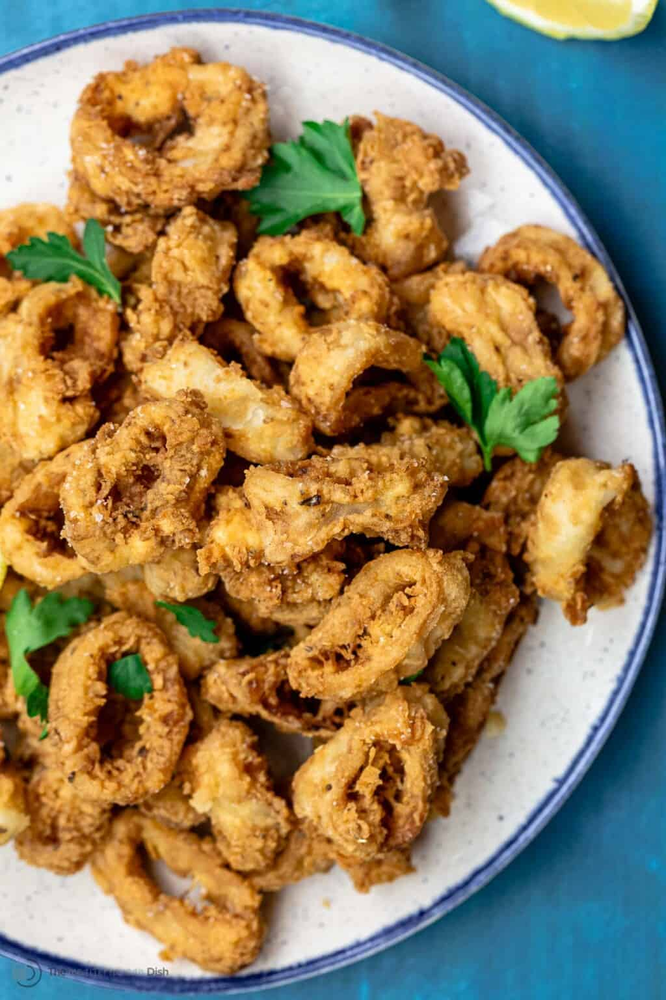
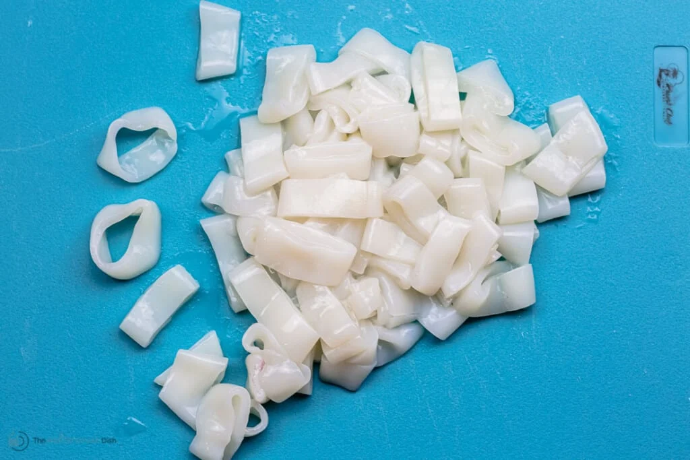
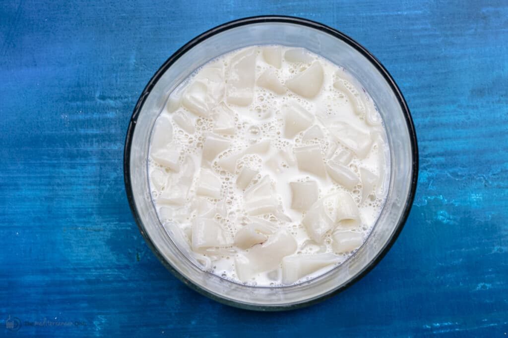
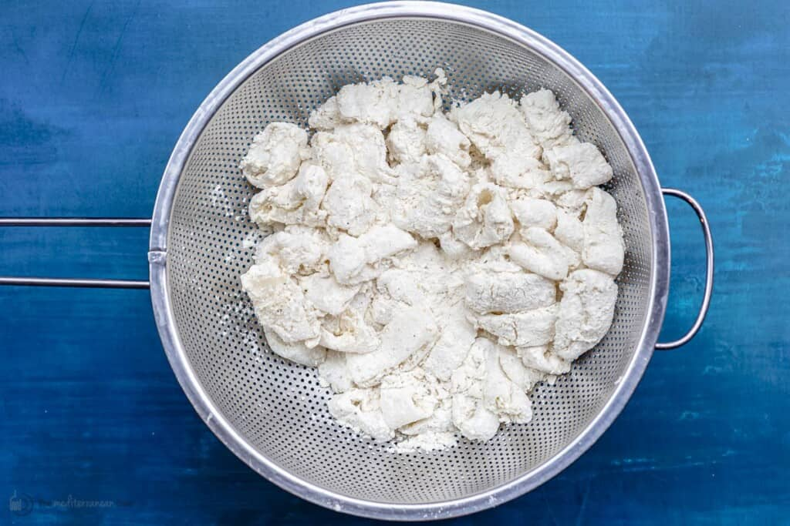
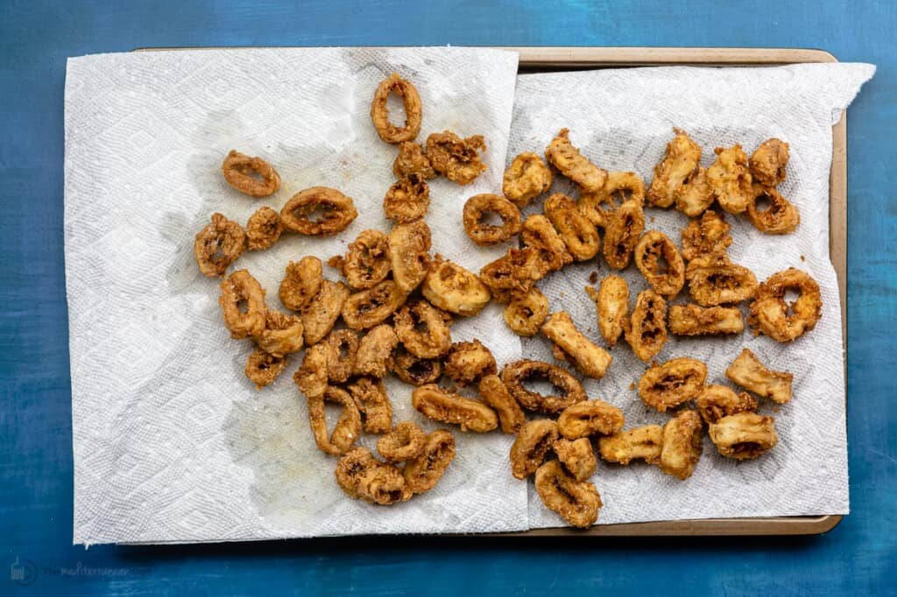

Back Homme

What is calamari?
Is calamari squid or octopus? Calamari is the Italian word for squid, a cousin to
octopus. Squid is firm and white with a mild, slightly sweeter taste that lends
itself to so many flavors. There are more than 300 species of squid in the world's
waters, but fewer than a dozen are utilized in cooking.
Squid is available in most grocery stores and, thankfully, it is not very
expensive. You can find it at the fish counter but, more often, in the freezer
aisle. In this calamari recipe, I used wild-caught frozen calamari tubes, which
are already cleaned. Frozen calamari rings are also available and will work in
this recipe.
5 Tips for the best crispy fried calamari recipe
- Do not cut the calamari rings too thinly. I cut my squid tubes
into ¾-inch thick rings, which extends the cooking time long enough for the
flour coating to brown and crisp up nicely, while making sure that the calamari
is tender on the inside.
-
Soak the rings in a solution of salted milk for 30 minutes
(refrigerated) before cooking.I shared this earlier, but this is
the trick to tenderizing the calamari meat and it also helps tame the fishy taste.
-
For crispy fried calamari, coat the rings in a mixture of flour,
cornstarch, and baking powder! You'll get a golden-brown,
crispy exterior on the tender squid rings.
-
Once coated in the flour mixture, allow the squid rings a few short
minutes to sit in a colander before frying. This allows the flour
to rehydrate so that the coating does not fall off the calamari when fried.
This will happen naturally anyway as you wait for the oil to heat, and
you will be frying the calamari in batches which will allow enough time
for the coating to stick.
-
Manage the heat of your cooking oil. Heat the oil to somewhere between
350 and 365 degrees F before cooking the calamari. The more common
problem with oil temperature is that it is often too low and the calamari
will absorb too much of the oil and become too soggy or chewy. And if the oil
is too hot, the outside will burn before the inside is cooked properly.
So that is why it is important to manage the oil heat. An oil thermometer is
helpful here, but if you do not have a thermometer, how do you know if
the oil is ready for frying? To test, drop just one calamari ring in
the oil, lots of gentle bubbles should form around it immediately and the
calamari and bubbles begin to float to the top.
-
Serve ASAP! Fried calamari rings are at their best when
served as nice and warm with a big splash of lemon juice!
How do you make fried calamari from scratch?
-
Slice into rings
Unless you already bought calamari rings, you'll start by cutting the cleaned
tubes into ¾-inch thick rings.

Soak in salted milk
In a medium bowl, stir 1 teaspoon of kosher salt in ½ cup of milk. Add the
squid rings and toss. Refrigerate for 30 minutes.

-
Dredge
Prepare a flour mixture by whisking together 1 ½ cup all-purpose flour, ⅓
cup cornstarch, ½ teaspoon baking powder, ¾ teaspoon of dry oregano,
and ½ teaspoon each black pepper and cayenne. Toss a few calamari rings
in the flour mixture until well-coated, then transfer them to a colander.
Repeat until all the calamari is coated in the flour mixture.

-
Fry and Drain
Fill a small 2.5-quart pot or saucepan with 4 inches of grapeseed oil and
heat the oil to somewhere between 350 and 365 degrees F. Drop one calamari
ring, if the oil bubbles and forms around it and the calamari brings to
float, the oil is ready. You can now cook the squid rings in batches
(about 8 at a time) for 3 minutes or until golden brown.
Prepare a tray and put a wire rack covered with paper towel on top.
As the calamari cook, use a slotted spoon to transfer the cooked crispy
rings to the prepared wire rack. If you have your oven heated on the
lowest setting, you can stick the cooked calamari in it to keep them
nice and warm. To test your oil, drop one calamari ring, many bubbles
will form around it and the calamari will begin to float.
